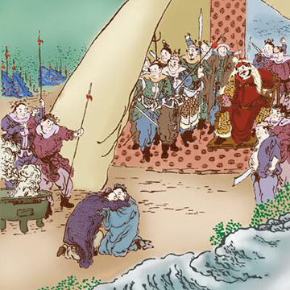

赵孝争死

汉朝时候，有一个人姓赵，单名叫孝的，表字常平，和他的弟弟赵礼，很是友爱的。有一年，年成荒歉得很，一班强盗占据了宜秋山，把赵礼捉去了，并且要吃他。 赵孝就赶紧跑到了强盗那里，求恳那班强盗们说道，赵礼是有病的人，并且他的身体又很瘦，是不好吃的。我的身体生得很胖，我情愿来代替我的弟弟，给你们吃，请你们把我的弟弟放走了。强盗还没有开口说话，他那弟弟赵礼一定不肯答应。他说道，我被将军们捉住了，就是死了，也是我自己命里注定的，哥哥有什么罪呢。两兄弟抱着，大哭了一番。 强盗也被他们感动了，就把他们兄弟俩都释放了。这件事传到了皇帝那里，就下了诏书，给他们兄弟两个都做了官。